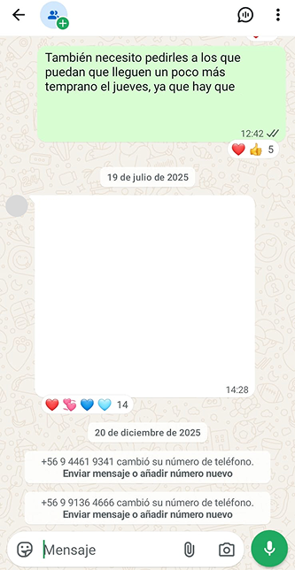
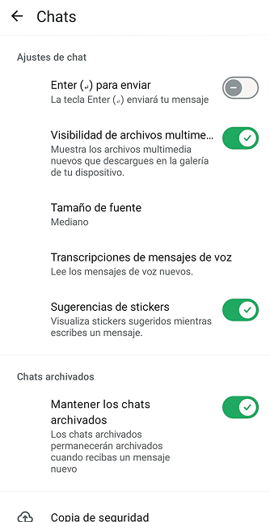
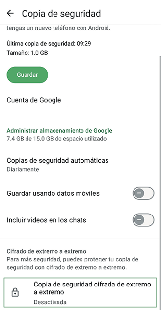
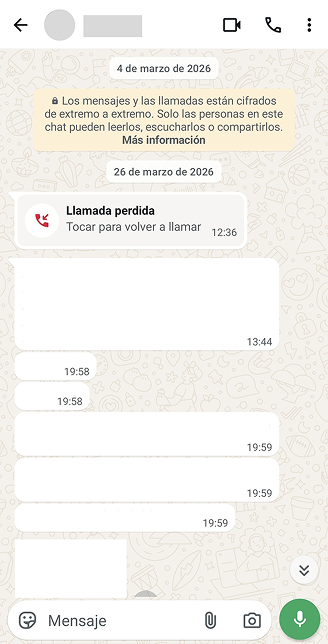
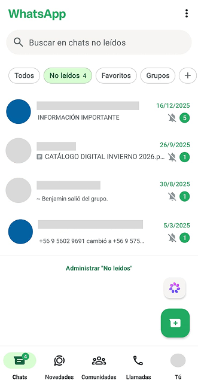
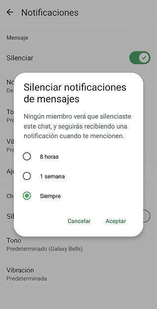

Mensajería instantáneaMetaScripts de usoRediseño crítico
1. Descrpción de la plataforma
WhatsApp es una aplicación de servicio de mensajería instantánea, disponible para celulares, computadoras y tabletas, incluyendo llamadas de voz o video, además permite compartir y recibir documentos, ubicaciones, contactos entre otros. Pertenece a la empresa estadounidense Meta y en un principio se presentó como una opción más económica comparada a los SMS.
Facilita la comunicación inmediata uno a uno y grupal, posee funciones adicionales como canales de difusión, estados personales y herramientas de atención al cliente.
Es particularmente dominante en América Latina, utilizada para comunicación cotidiana y por pequeñas a medianas empresas mediante WhatsApp Business, con cifrado de extremo a extremo.
Actualmente, la aplicación es gratuita a excepción de los usuarios de WhatsApp Business, es decir aquellas empresas que gestionan una alta cantidad de mensajes.
2. Mapa sistémico
En nuestro mapa sistémico identificamos como actores humanos, a los desarrolladores de la aplicación y a los usuarios de ella, diferenciando entre usuarios individuales y corporativos, ya que tienen formas de uso y flujos distintos. Los usuarios individuales utilizan WhatsApp principalmente para comunicarse con otras personas, mientras que los corporativos lo utilizan para comunicarse con clientes mediante WhatsApp Business, generando flujos de monetización, datos y contenido comercial, además de funciones como la automatización de mensajes, diferenciándose del tipo de datos de un usuario individual. Incorporamos elementos no humanos como el smartphone, los servidores, las notificaciones, los datos y la empresa, junto con dos funciones las cuales son Meta AI y los algoritmos de seguridad, donde pudimos diferenciar WhatsApp de plataformas como Instagram o TikTok, ya que su algoritmo funciona organizando conversaciones y datos, incorporando sistemas de seguridad y detección de spam, en las otras aplicaciones mencionadas, funciona principalmente con un feed según intereses.
Por otro lado, los servidores gestionan el envío de los mensajes, mientras que los datos incluyen contactos y metadatos de conexión. También consideramos el contenido como flujo principal, ya que corresponde a los mensajes, imágenes y archivos que circulan entre usuarios. La atención es un flujo que está principalmente en las notificaciones, que buscan captar la atención del usuario y así generar una respuesta de usuario a otro usuario. Finalmente, ubicamos el control y poder principalmente en los desarrolladores de Meta, porque pueden modificar funciones, establecer jerarquías y definir cómo se gestionan ciertos datos.
Nuestro primer bucle de retroalimentación se basa en el proceso detrás del reporte hecho por un usuario, porque muestra cómo la información generada por los usuarios permite al sistema detectar y regular estos comportamientos dentro de la plataforma, y como segundo bucle mostramos como el sistema de notificaciones capta la atención del usuario, haciendo que el usuario escriba una respuesta y así hacer que la comunicación continúe.
3. Script inscritos en la plataforma
Script 1: Responde rápido sin necesidad de escribir

Script 2: Confía y comparte: tus mensajes están protegidos



Script 3: Toma distancia del grupo sin tener que salir de el


Propuesta de rediseño
El problema con el diseño actual no es que el cifrado no esté en la copia de seguridad por defecto, más bien se trata de que la sensación que es guiada por el aviso “las llamadas y mensajes enviados a este chat ahora están seguros con cifrado a extremo” no muestra la realidad completa.
La nueva propuesta, inserta los valores de transparencia y protección de privacidad del usuario a la interfaz de WhatsApp, pues se especifica dentro del chat qué información está protegida.
En primer lugar, el aviso en la parte superior del chat explica qué es el cifrado, además la aplicación deja de tomar decisiones por el usuario mediante su diseño, con el rediseño, el usuario puede administrar la privacidad de sus mensajes directamente desde el mismo chat, no necesita buscar la opción escondida entre tantas configuraciones confusas. A esto se suma que, aquellos mensajes o información compartida que cuenten con cifrado en su copia de seguridad serán acompañados por un ícono que compruebe dicho estado de seguridad.